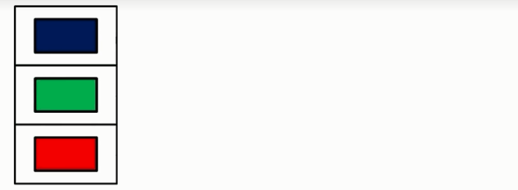
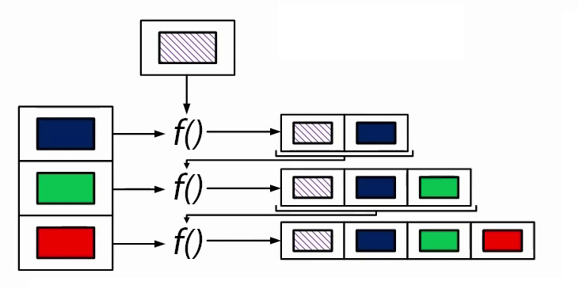

Array.reduce / Array.fold¶
Array.reduce¶
Функция Array.reduce является своеобразной альтернативой циклам. Она последовательно применяет функцию, которую вы пожелаете, к каждому из элементов массива. Массив при этом должен иметь хотя бы 1 элемент. В противном случае получим исключение.
- Принцип работы reduce примерно такой:
- Запоминаем значение первого элемента массива в переменную acc (аккумулятор)
- Вызываем функцию f и передаем в нее два аргумента: аккумулятор и следующий элемент массива
- Записываем в переменную acc значение, полученное на предыдущем шаге.
- Повторяем шаги 2 и 3 до тех пор, пока не достигнем конца массива.
- Возвращаем значение аккумулятора.
Не трудно заметить, что основным недостатком функции reduce является то, что тип возвращаемого результата должен совпадать с типом элемента массива.
Если у вас массив строк - то результатом reduce может быть только строка.
Но не стоит отчаиваться, ведь есть более гибкая версия этой функции - Array.fold
Array.fold¶
Принцип работы Array.fold почти такой же как у reduce. Основные отличия:
- аккумулятор инициализируете вы сами
- функция f применяется и к первому элементу
Тип аккумулятора, и, следовательно, тип возвращаемого значения, может отличаться от типа элемента массива.
Например, если у вас массив строк, то результатом может быть массив каких-либо объектов, чисел и т.д.
На базе Array.fold работают более изощренные функции, такие как Array.fold2, Array.foldBack

{kind=link}
{kind=link}